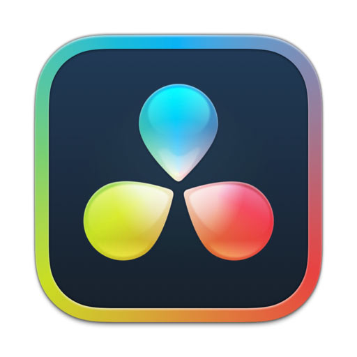

V prvním úkolu jsme pracovali ve Scratchi. Měly jsme si vytvořit scénu, která připomínala koncertové podium pro funkční bicí sustavu. Při kliknutí na např. buben, začal hrát zvuk připomínající bubny a tak to fungovalo s celou bicí soustavou.
Co je Scratch?
Scratch je jednoduchý vizuální programovací jazyk určený hlavně (ale nejen) pro děti. Slouží k výuce programování. Dají se pomocí něj vytvářet jednoduché hry, animace či interaktivní prezentace.
Po dokončení drum simulátoru jsme se přesunuli k praci v Da Vinci Resolve. Postupovali jsme podle e-učebnice a základních cvičení připojených k ní. V první sceně byl rozhovor mezi dvěma herci v autě, úkolem bylo spojit 2 scény v jendu, kdy byl vmyěněn jenen herec. Druhá scéna se odehrává na plaži, kdy se změnilo nebe za jiné, hezčí. Třetí ůkol byla poslední, měli jsme se otestovat jak dobře programu rozumíme. Nebyl přiřazen manuál z učebnice.
Co je Da Vinci Resolve?
Da Vinci Resolve je profesionální program pro tvorbu a editaci videa, zvuku a motion grafiky.
Pracujeme v programu Visual Studio Code, kde se učíme základy jazyka HTML. Začínaly jsme s tagy, paragrafy, seznamy, nesting a postupně zkončili u odkazů a obrazků. Naším pololetním úkolem je vytvořit si vlasntí portfolio našich pracích na hodinách v VSC programu.
Co je Visual Studio Code?
Visua Studio Code je lehký, ale výkonný editor zdrojového kódu, který běží na počítači.